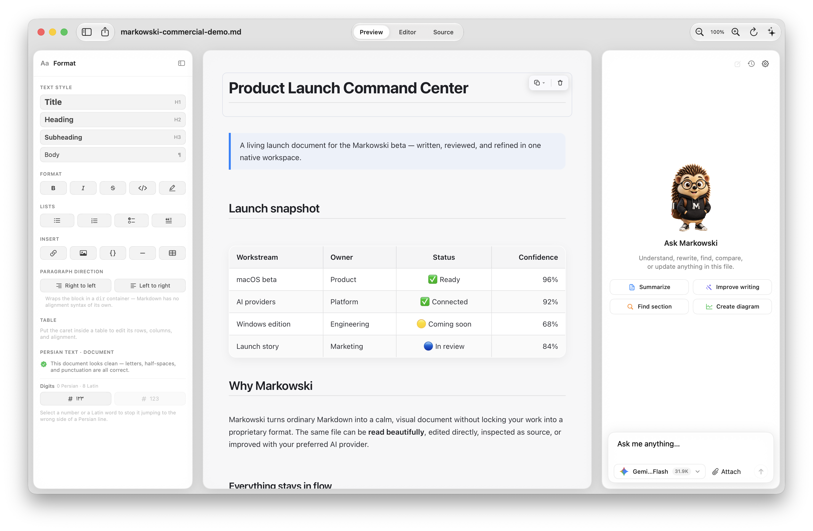
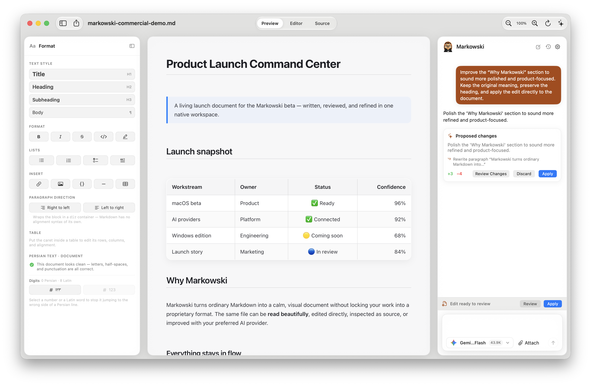
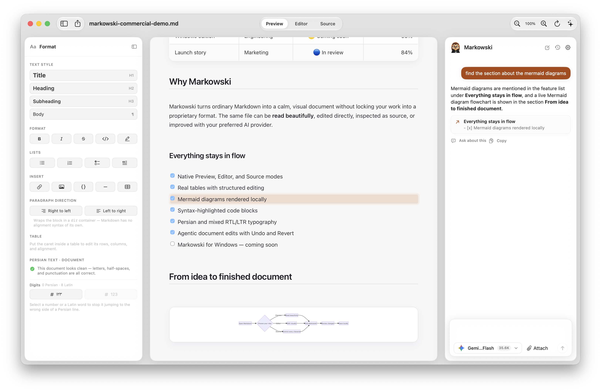
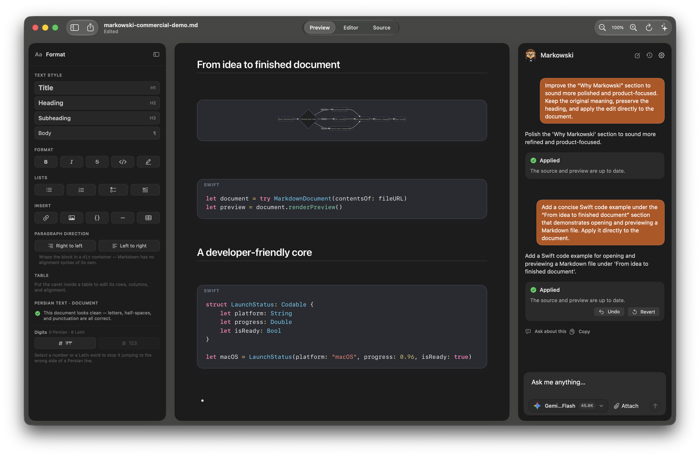
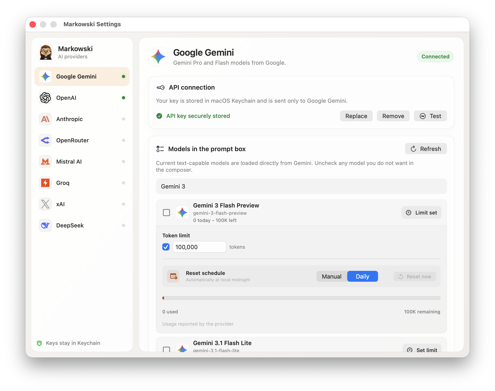

Read beautifully
Typography, tables, task lists, code blocks, and Mermaid diagrams render as a calm native document.
Read it like a document. Edit it without wrestling syntax. Ask your preferred AI to find, explain, or carefully improve what is already there.
Preview, edit, and inspect the same portable file.
Format visually, work in raw Markdown, and keep Markowski beside the document when you want a second pair of eyes.

Typography, tables, task lists, code blocks, and Mermaid diagrams render as a calm native document.
Move between Preview, visual Editor, and Source without leaving your portable Markdown file behind.
Persian typography and mixed RTL/LTR content stay readable, aligned, and under your control.
Markowski understands the document around your prompt. It can propose a focused change, show exactly what will happen, then apply it directly—with Undo and Revert close by.
Review a precise proposal instead of trusting an invisible rewrite. Keep the original meaning, inspect the scope, and decide when it is ready.

Ask for a section in natural language and jump straight to the matching place in the document.

Syntax-highlighted code and local Mermaid diagrams look at home in both light and dark mode.

Connect only the providers you use. Markowski shows models from active API keys, keeps credentials in macOS Keychain, and lets you choose what appears in the prompt box.
 Gemini
OpenAI
Gemini
OpenAI
 Anthropic
OpenRouter
Anthropic
OpenRouter
 Mistral
Mistral
 Groq
xAI
Groq
xAI
 DeepSeek
DeepSeek

Choose the models that appear in the composer, see token usage, and set a per-model limit with a manual or daily reset schedule.
Open a Markdown document from your Mac, save it where you choose, and keep using it anywhere. Markowski never turns your writing into a proprietary workspace.
The first macOS beta is ready to try. Install it with a familiar drag-to-Applications DMG. A Windows edition is already on the roadmap.